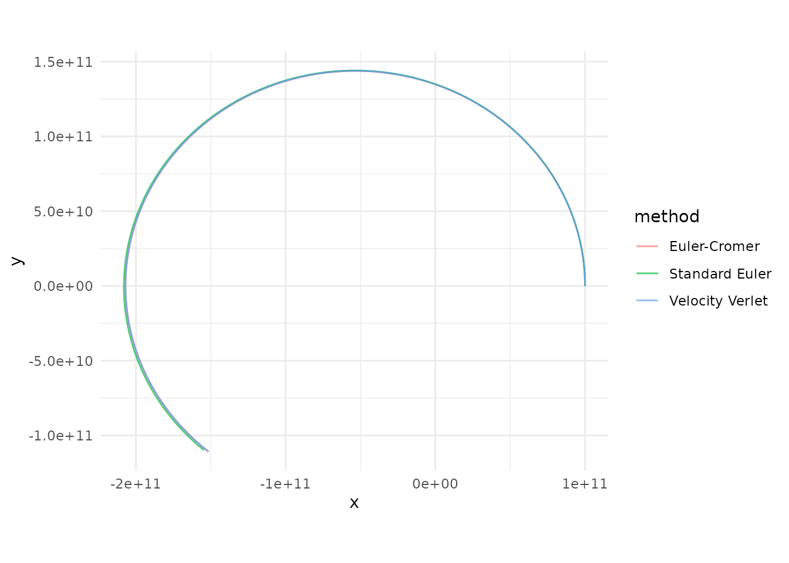

Gravitational Acceleration
Every body in the system attracts every other body according to Newton’s Law of Universal Gravitation. For body , the net acceleration due to all other bodies is:
where is the distance between the two bodies and is the unit vector pointing from toward .
Why Initial Velocity Matters
Gravity alone will pull every body straight toward every other body. What prevents them from colliding is their initial velocity — the sideways motion that turns a free-fall into a curved orbit. This is the same reason the Moon doesn’t crash into the Earth: it’s falling toward us constantly, but it’s also moving sideways fast enough that it keeps missing.
When you call add_body(), the vx,
vy, vz parameters set this initial velocity.
The balance between speed and distance determines the shape of the
orbit. At a given distance
from a central mass
,
the circular orbit velocity is:
If the body’s speed exactly matches this, it traces a perfect circle. Faster and the orbit stretches into an ellipse (or escapes entirely if ). Slower and the orbit drops into a tighter ellipse that dips closer to the central body. With zero velocity, the body falls straight in — no orbit at all.
Gravitational Softening
When two bodies pass very close,
and the acceleration diverges toward infinity. This is a well-known
numerical problem in N-body codes. orbitr offers an
optional softening length
that regularizes the potential:
With softening enabled, close encounters produce large but finite
forces instead of blowing up to NaN. Set
softening = 0 (the default) for exact Newtonian gravity, or
try something like softening = 1e4 (10 km) for dense
systems.
Numerical Integration Methods
simulate_system() offers three methods for stepping the
system forward through time. All operate in 3D Cartesian
coordinates.
1. Velocity Verlet (default, method = "verlet")
A second-order symplectic integrator. It conserves energy over long timescales, making it the gold standard for orbital mechanics. Orbits stay closed and stable indefinitely.
The position is advanced first, then the acceleration is recalculated at the new position, and finally the velocity is updated using the average of the old and new accelerations. This requires two acceleration evaluations per step (the main cost), but the payoff in stability is enormous.
2. Euler-Cromer (method = "euler_cromer")
A first-order symplectic method. It updates velocity first, then uses the new velocity to update position. This small reordering prevents the systematic energy drift that plagues standard Euler:
Faster than Verlet (one acceleration evaluation per step) but less accurate. Good for quick previews.
3. Standard Euler (method = "euler")
The classical textbook method. Position and velocity are both updated using values from the current time step:
This artificially pumps energy into the system, causing orbits to spiral outward over time. Included primarily for educational comparison — use Verlet for real work.
Comparing the Three Methods
library(orbitr)
library(dplyr)
#>
#> Attaching package: 'dplyr'
#> The following objects are masked from 'package:stats':
#>
#> filter, lag
#> The following objects are masked from 'package:base':
#>
#> intersect, setdiff, setequal, union
system <- create_system() |>
add_body("Star", mass = 1e30) |>
add_body("Planet", mass = 1e24, x = 1e11, vy = 30000)
verlet <- simulate_system(system, time_step = seconds_per_hour, duration = seconds_per_year, method = "verlet") |>
mutate(method = "Velocity Verlet")
euler_cromer <- simulate_system(system, time_step = seconds_per_hour, duration = seconds_per_year, method = "euler_cromer") |>
mutate(method = "Euler-Cromer")
euler <- simulate_system(system, time_step = seconds_per_hour, duration = seconds_per_year, method = "euler") |>
mutate(method = "Standard Euler")
bind_rows(verlet, euler_cromer, euler) |>
filter(id == "Planet") |>
ggplot2::ggplot(ggplot2::aes(x = x, y = y, color = method)) +
ggplot2::geom_path(alpha = 0.7) +
ggplot2::coord_equal() +
ggplot2::theme_minimal()
Verlet traces a clean closed ellipse, Euler-Cromer stays close but drifts slightly, and standard Euler spirals outward as it pumps energy into the orbit.
Keplerian Orbital Elements
Everything above describes how orbitr simulates
— stepping positions and velocities forward using Newton’s law. But
there’s an older, more elegant description of orbits that predates
Newton by decades: Kepler’s laws. Johannes Kepler
showed in 1609 that planetary orbits are ellipses with the Sun at one
focus, and that they sweep out equal areas in equal times. These
geometric properties lead to a compact way of describing any orbit with
just six numbers, called the Keplerian orbital
elements.
The six elements split into three groups:
Shape — how big and how stretched is the ellipse?
- Semi-major axis (): half the longest diameter of the ellipse. Determines the orbital period through Kepler’s Third Law: , where is the gravitational parameter of the parent body.
- Eccentricity (): how elongated the ellipse is. is a circle; is an ellipse. At any point, the distance from the parent is .
Orientation — how is the ellipse tilted and rotated in 3D space?
- Inclination (): the angle between the orbital plane and a reference plane (the ecliptic for solar system orbits). is flat; is a polar orbit.
- Longitude of ascending node (): the direction the tilt points. Measured from a reference direction to where the orbit crosses the reference plane going “upward.”
- Argument of periapsis (): the angle within the orbital plane from the ascending node to the closest-approach point. Rotates the ellipse around the parent within its own plane.
Position — where is the body right now?
- True anomaly (): the angle from periapsis to the body’s current position along the orbit. is at periapsis (closest); is at apoapsis (farthest).
From Elements to Cartesian State Vectors
orbitr’s simulation engine works entirely in Cartesian
coordinates — positions
and velocities
.
The function add_body_keplerian() converts Keplerian
elements to Cartesian through a standard three-step procedure:
Step 1: Solve the orbit equation in the orbital plane. The distance from the parent at true anomaly is:
The position in the perifocal frame (a coordinate system where the x-axis points toward periapsis and the y-axis is 90° ahead in the direction of motion):
Step 2: Compute velocity from the vis-viva relation. The specific angular momentum gives the velocity components in the perifocal frame:
These follow from conservation of angular momentum () and the vis-viva equation .
Step 3: Rotate into the inertial frame. Three Euler rotations transform from the perifocal frame to the simulation’s inertial frame:
This sequence first rotates by to align periapsis with the ascending node, then tilts by to incline the orbital plane, and finally rotates by to orient the node line. The resulting position and velocity are added to the parent body’s state to get absolute coordinates.
Kepler’s Laws and the Simulation
An interesting property of the Keplerian description is that it’s exact for two-body problems — a single planet orbiting a single star will follow a perfect ellipse forever. The elements are constants of motion.
In an N-body simulation like orbitr, however, the
elements are only approximate because the gravitational pulls of other
bodies perturb the orbit. Jupiter slightly tugs on Earth, Mars slightly
tugs on Venus, and so on. Over long timescales, these perturbations
cause the elements to drift —
precesses,
oscillates, inclinations wobble. This is real physics: the precession of
Mercury’s perihelion was one of the first tests of General
Relativity.
The Keplerian elements in add_planet() and
load_solar_system() define the initial conditions
at the start of the simulation. Once simulate_system()
takes over, the full N-body dynamics handles all the perturbations
automatically.
For a thorough walkthrough of each element with visual examples, see the Keplerian Orbital Elements vignette.
The C++ Engine
The inner acceleration loop is the computational bottleneck of any
N-body simulation. orbitr ships a compiled C++ kernel (via
Rcpp) that computes the
pairwise interactions in a tight nested loop. When the package is
installed from source with a working C++ toolchain,
simulate_system() automatically dispatches to this engine.
If the compiled code isn’t available, it falls back to a vectorized R
implementation that uses matrix outer products — still fast, but the C++
path is significantly faster for systems with many bodies.
You can control this with the use_cpp argument:
# Force the pure-R engine (useful for debugging or benchmarking)
simulate_system(system, use_cpp = FALSE)